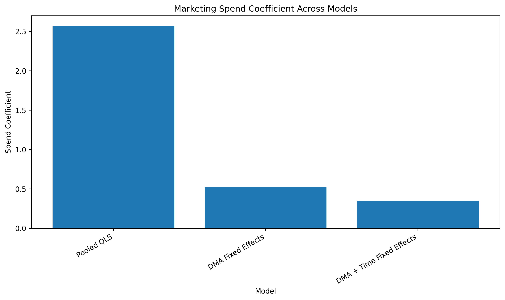
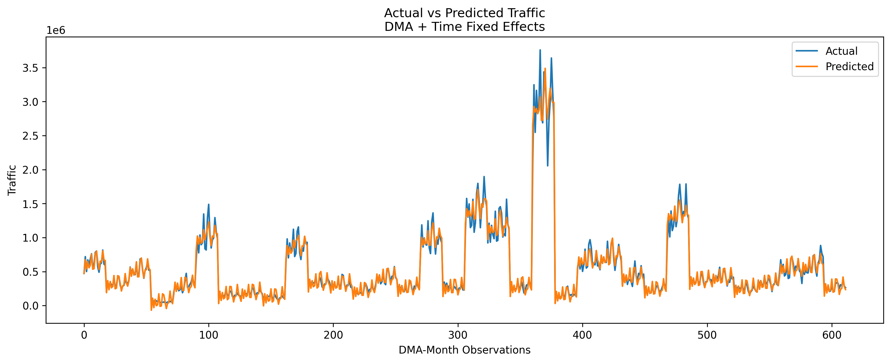
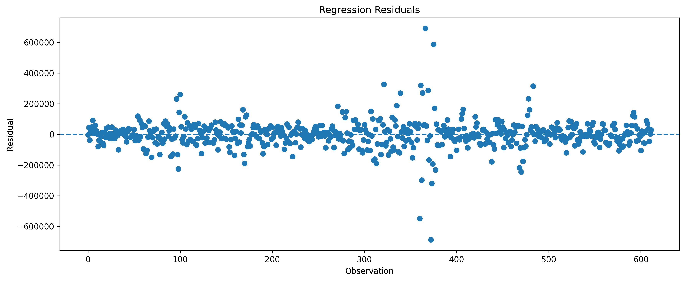

Pooled OLS
0.496
2.5698
0.0000
Three regression specifications were evaluated:
| Model | Spend Coefficient | Spend P-Value | R-Squared | Observations |
|---|---|---|---|---|
| Pooled OLS | 2.5698 | 0.0000 | 0.4965 | 612.0000 |
| DMA Fixed Effects | 0.5195 | 0.0000 | 0.1942 | 612.0000 |
| DMA + Time Fixed Effects | 0.3439 | 0.0000 | 0.1720 | 612.0000 |


